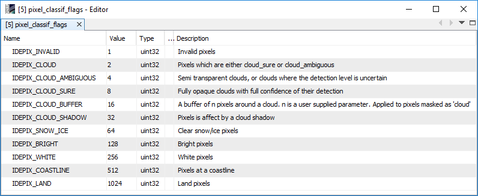
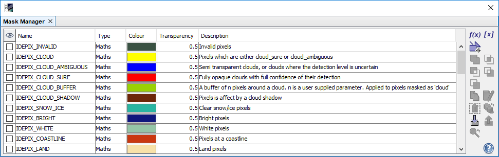

| SNAP Data Processors - OLCI Atmospheric Correction Processor Description |
|
OLCI or MERIS L1b product: Used to select the OLCI or MERIS L1b source product. Use the ... button to open a data product currently not opened in the Sentinel Toolbox.
Name: Used to specify the name of the target product.
Save to: Used to specify whether the target product should be saved to the file system. The combo box presents a list of file formats.
Open in SNAP: Used to specify whether the target product should be opened in the Sentinel Toolbox. When the target product is not saved, it is opened in the Sentinel Toolbox automatically.

Sensor:
The sensor to select, either OLCI or MERIS. The default is OLCI.
Only compute AOT product:
If set, only AOT product is generated instead of full SDR product. The default is 'false'.
Copy AOT bands into SDR product:
If set, bands of AOT and its uncertainty are copied into SDR product. The default is 'false'.
Write SDR uncertainty bands:
If set, SDR uncertainty bands will be written into SDR product. The default is 'false'.
Use constant AOT value:
If set, AOT retrieval is skipped and a constant value shall be used in AC. The default is 'false'.
Constant AOT value:
Constant AOT value which is used if the retrieval is skipped. The default value is 0.15.
The processor provides the following outputs:
sdr_n:
The SDR (Spectral Directional Reflectance) for band n with n = 1,.., 15. Note that in case of OLCI
these band indices are the indices of the corresponding MERIS heritage bands and NOT the original OLCI
radiance band indices.
sdr_error_n:
The SDR (Spectral Directional Reflectance) uncertainties for band n with n = 1,.., 15.
These outputs are optional. Note that in case of OLCI
these band indices are the indices of the corresponding MERIS heritage bands and NOT the original OLCI
radiance band indices.
aot:
The Aerosol Optical Thickness. This output is optional.
aot_err:
The uncertainty of the Aerosol Optical Thickness. This output is optional.
quality_flags:
The L1b product quality flags (OLCI only).
l1_flags:
The L1b product quality flags (MERIS only).
pixel_classif_flags:
The Idepix pixel classification result, written as a flag band.
This band holds integer values which for Sentinel-3 OLCI and Envisat MERIS follow the flag codings shown below.

